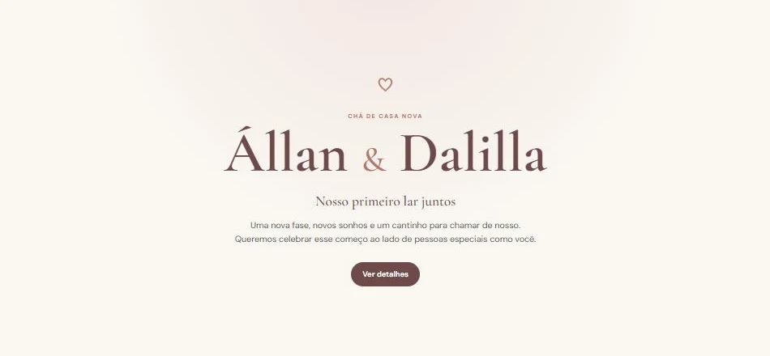
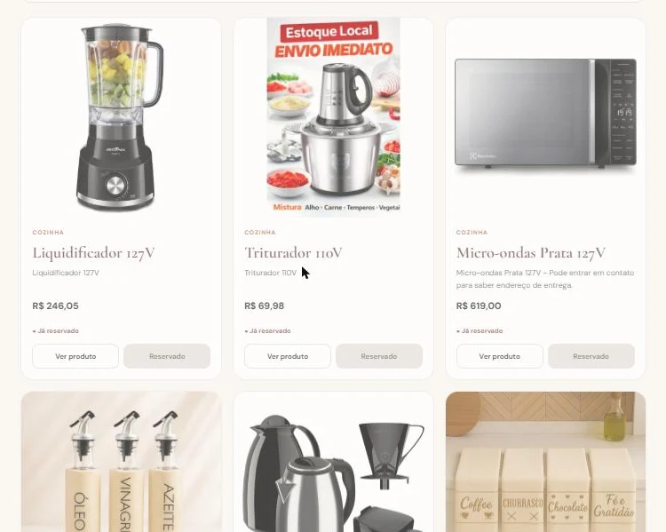

Resultado
Impacto da solução
Convidados veem a lista de presentes e reservam pelo celular, sem cadastro; a reserva é validada no servidor para evitar duas pessoas no mesmo presente, e o administrador gerencia a lista por um painel.
Projeto pessoal • Site de evento
Convite e lista de presentes com reserva online
Site de convite e lista de presentes para um chá de casa nova, em que o convidado reserva o presente online e o administrador acompanha tudo por um painel. Projeto pessoal feito por mim para o chá de casa nova meu e da Dalilla, com a autorização dela. Toda a programação é minha.
Arquitetura
Tecnologias
Telas


Resultado
Convidados veem a lista de presentes e reservam pelo celular, sem cadastro; a reserva é validada no servidor para evitar duas pessoas no mesmo presente, e o administrador gerencia a lista por um painel.
Aprendizados
Modelagem de banco no Supabase, segurança com RLS, funções no servidor, painel administrativo e desenvolvimento mobile-first.
Próximo passo
Se sua empresa precisa digitalizar processos, desenvolver um sistema, automatizar tarefas ou criar um produto digital, vamos conversar.